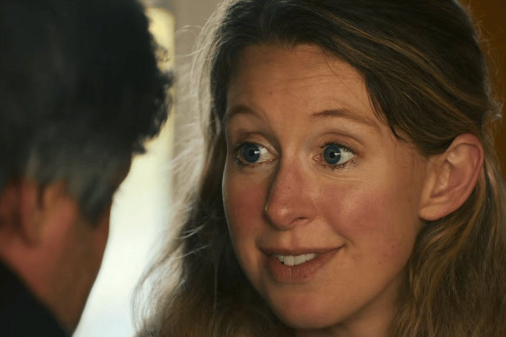
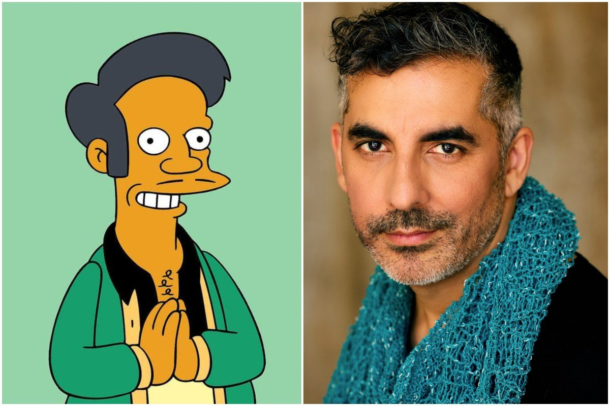
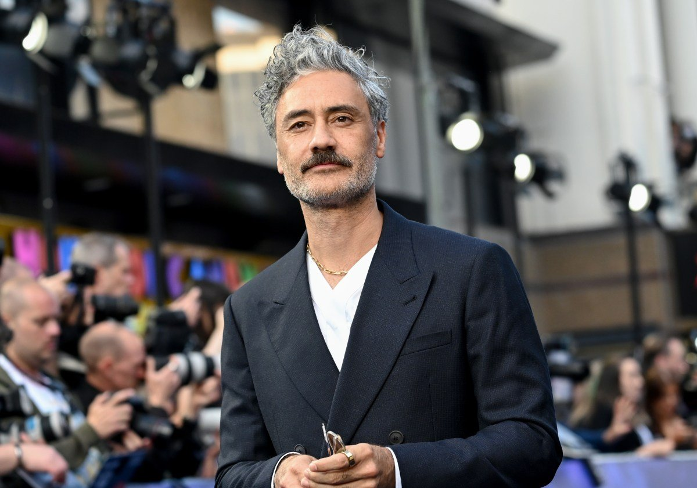
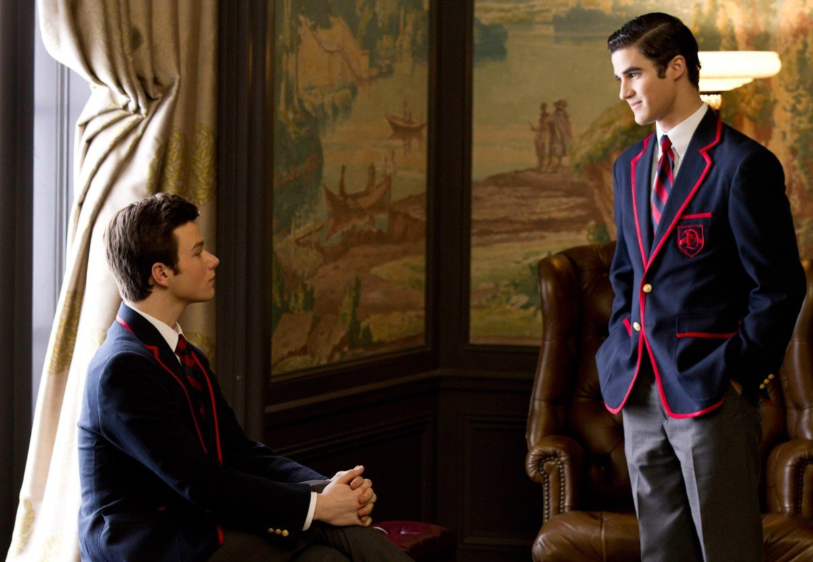

You Can See Everything opens to $15 million, the biggest documentary debut since 2004

Nathan Fielder and Lance Oppenheim’s nearly three-hour Elizabeth Holmes documentary made $15 million from just 855 theaters, double its $7–8 million projection and good for second place. It’s the best opening for a documentary since Fahrenheit 9/11 in 2004 and the biggest debut for any film on fewer than 1,000 screens since Borat in 2006. A24 made it in secret for about $7 million and reported more than 2,000 sold-out shows, with about 70% of the audience under 35.
Paramount’s Street Fighter still won the weekend with $31 million (a B- CinemaScore and 42% on Rotten Tomatoes), while Whalefall sank with $8 million against a $60 million budget. Netflix also reported box office for the first time: Los Javis’ La Bola Negra averaged $69,375 across four theaters, the second-best average ever for a non-English film after Parasite.
 You Can See Everything trailer on YouTube →
·
Variety →
·
You Can See Everything trailer on YouTube →
·
Variety →
·
 Deadline →
Deadline →
The Simpsons gives Apu a voice again, eight years after he went silent

Sunday’s “Treehouse of Horror Presents: The Revengening” quietly debuted Sunil Malhotra, who moved to the U.S. from India as a child, as the new voice of Apu. Hank Azaria stepped away from the role in 2020 after years of criticism that the character was a stereotype, and Apu hadn’t spoken on the show since. Janina Gavankar (The Morning Show) now voices his wife, Manjula.
The casting was kept secret, with no advance screeners and NDAs at the table read. Malhotra said the audition call “made my stomach sink” at first, but he signed on after meeting showrunner Matt Selman and called the return “a reclamation.” Selman says Apu and his family will now show up more often.
Taika Waititi confirms his Star Wars movie is “on ice”

The Star Wars film Waititi has been developing since 2020 is shelved for now. “I hate to break this to you, but we’re going to actually put it on ice and we’re working on a different thing together,” he told Inverse, adding that his publicist had asked him not to say more. “It’s very iced… Ice ages do come to an end. Who knows?”
He was promoting Klara and the Sun, his Kazuo Ishiguro adaptation starring Jenna Ortega, which opens this week to mixed reviews. A shelved film has no trailer, so the YouTube link is the Klara and the Sun trailer.
Chris Colfer surprises Darren Criss at the Royal Albert Hall for a Glee duet

At his one-night-only London concert on Saturday, Criss started “Baby, It’s Cold Outside” alone, joking he’d sing both parts, until Colfer walked out mid-song: “The only thing inappropriate about doing this song is doing it without me.” Kurt and Blaine first sang it in 2010’s “A Very Glee Christmas,” and fan videos of the reunion and their hug spread all weekend.
It lands a month after Ryan Murphy said he’d finished a script for a possible Glee revival and has been in touch with about 10 original cast members, though he says nobody has read it yet.
Bottom of the news
- Taylor Swift’s The Life of a Showgirl logged a 15th week at No. 1 on the Billboard 200, taking her career total to 101 weeks at the top.
- A New Mexico judge threw out the child sexual contact indictment against Timothy Busfield, citing prosecutorial misconduct; prosecutors could seek a new one.
- Gunmen fired at a car linked to Tiger Shroff in Mumbai’s Juhu area; the actor was not hurt.
- Rajinikanth’s Jailer 2 passed ₹424 crore worldwide in four days.
- LISA’s Kill Bill–flavored single “Tarantino” and her Press Play EP arrive Oct. 23.
- Harry Styles is making a documentary about his Madison Square Garden residency with director John Wilson.
- Jesse Eisenberg’s The Debut, starring Julianne Moore, closed the London Film Festival to Oscar buzz.
- DC’s R-rated, $40 million Clayface opens next weekend.